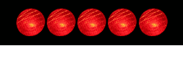

|
Die
sprachenlernen24-Lernhilfen: Durchdachte Ergänzung zu den
Lernmethoden
Die
sprachenlernen24-Lernhilfen: Durchdachte Ergänzung zu den
Lernmethoden
| Übersicht |
In diesem Programm finden Sie zahlreiche durchdachte Lernhilfen, die Ihnen das Lernen erleichtern werden. Hier stellen wir sie Ihnen im Überblick vor:
Die
7er-Wiederholung
Wenn
Sie innerhalb der Tests sieben Wörter nicht wussten, bekommen
Sie zur Wiederholung eine Übersicht über diese sieben
nicht-gewussten Lerneinheiten. Unter dieser Kurzwiederholung
erscheint ein Balken.
Dieser Balken verändert seine Farbe: Ist er ganz grün, so ist eine Minute vergangen. So haben Sie immer eine zeitliche Orientierung darüber, wie lange Sie sich die Wiederholung anschauen.
Pause
nach 30 Minuten: Lernen Sie nicht zu lange am Stück
Innerhalb
der Tests erscheint nach jeweils 30 Minuten Lernen ein Pausenzeichen.
Hier können Sie eine fünfminütige Pause einlegen, bis
die Ampel wieder grün wird: Nach je einer Minute wird eine der
Ampeln auf Grün geschaltet.

Zeithinweise
beim Lernen einzelner Vokabeln
Damit
Sie sich orientieren können, wie lange Sie sich bereits eine
Lerneinheit einprägen, finden Sie unterhalb der Vokabel einen
diskreten Zeithinweis: Alle 5 Sekunden erscheint ein neuer Punkt am
Bildschirm.
Eingeblendete
Zitate und Info-Kästchen
An
vielen Stellen im Programm erhalten Sie kurze eingeblendete Zitate
mit weiteren Tipps, die Ihnen das Lernen erleichtern werden.
Beim Start einer jeden Lernmethode finden Sie am oberen Rand des Browserfensters eine Hilfe-Funktion. Wenn Sie diese aktivieren, finden Sie dort nochmals erklärt, welchen Sinn diese Übung hat und wie Sie sie am besten handhaben können.